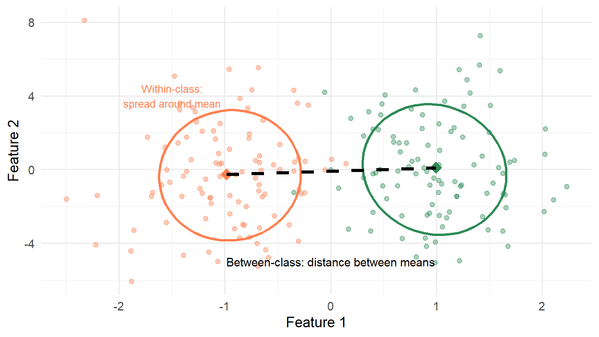
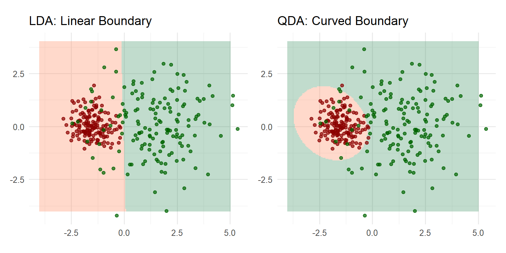
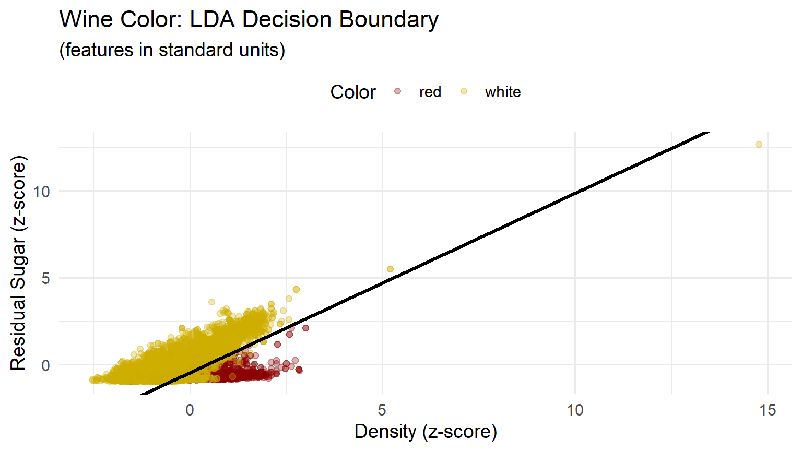
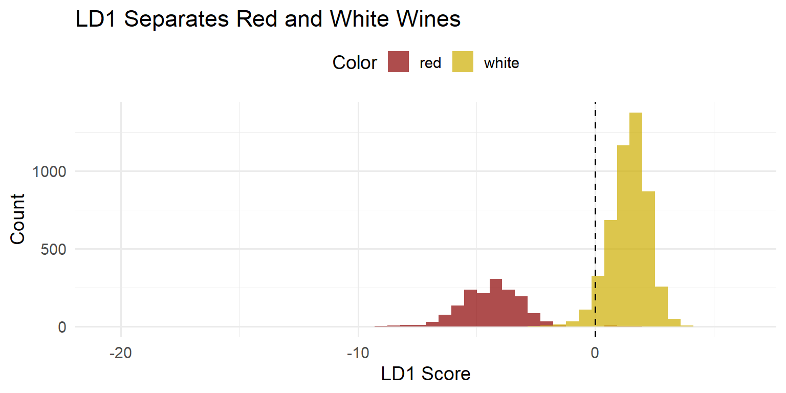
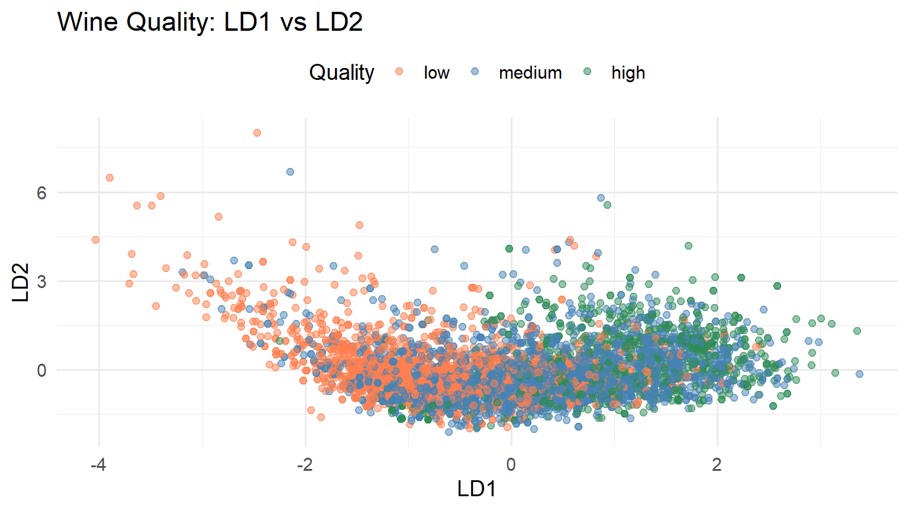

| Feature | LD1 Coefficient |
|---|---|
| density | -1.72 |
| res_sugar | 1.67 |
Linear Discriminant Analysis
Finding Directions of Maximum Class Separation
EDA for Machine Learning
What is LDA?
The Core Question
In Chapter 8, PCA asked: “Along which directions do features vary most?”
Now we ask a different question:
Core Question
Along which directions are the classes best separated?
When class labels are available, we can do better than maximizing variance.
PCA vs LDA: The Key Distinction
| PCA | LDA | |
|---|---|---|
| Input | Features only | Features + class labels |
| Objective | Maximize variance | Maximize class separation |
| Type | Unsupervised | Supervised |
Both find directions for projection—but “best” means different things.
When PCA Fails

When projected to PC1, the two classes completely overlap
PC1 (dashed): Maximum variance—but useless for classification!
LD1 (solid): Maximum class separation—the direction we need.
The LDA Solution
LDA finds the direction(s) that:
- Maximize the spread of class means (between-class variance)
- Minimize the spread within each class (within-class variance)
LDA in One Sentence
Maximize separation between classes while keeping each class tight.
Fisher’s Geometric View
Two Types of Variance
When we project data onto a direction \(a\), we can measure:
Between-class variance: How spread out are the projected class means?
Within-class variance: How spread out are observations around their class mean?
Good classification directions have high between-class and low within-class variance.
Visual: Within vs Between
Figure 1: Within-class spread (ellipses) vs between-class spread (line connecting means)
Fisher’s Criterion
R.A. Fisher (1936) proposed: find direction \(a\) that maximizes the ratio
\[ \frac{\text{Between-class variance}}{\text{Within-class variance}} = \frac{a^\top B \, a}{a^\top W \, a} \]
where:
- \(B\) = between-class covariance matrix
- \(W\) = within-class (pooled) covariance matrix
This Rayleigh quotient balances separation against spread.
The Eigenvalue Solution
Key Result
The optimal direction \(a\) is the eigenvector of \(W^{-1}B\) with the largest eigenvalue.
\[ W^{-1} B \, a = \lambda \, a \]
Like PCA, LDA reduces to an eigenvalue problem—we solve directly, no iteration.
How Many Directions?
With \(K\) classes, the matrix \(B\) has rank at most \(K - 1\).
Why? The \(K\) class means live in an affine subspace of dimension \(K - 1\).
Dimension Reduction
LDA produces at most \(\min(d, K-1)\) discriminant directions.
- \(K = 2\) classes → 1 direction (LD1)
- \(K = 3\) classes → 2 directions (LD1, LD2)
Regardless of how many features \(d\) you start with!
Connection to PCA
Both PCA and LDA find optimal projection directions:
| PCA | LDA | |
|---|---|---|
| Maximizes | \(\dfrac{a^\top T \, a}{a^\top I \, a}\) | \(\dfrac{a^\top B \, a}{a^\top W \, a}\) |
| Matrix | Total covariance \(T\) | Between/Within ratio |
| Constraint | Unit length | Unit length (in \(W\) metric) |
Key insight: LDA is like PCA, but measuring spread relative to within-class variation rather than identity.
Why Linear Boundaries?
The Gaussian Assumption
LDA assumes each class has a multivariate normal distribution:
\[ f_k(x) = \frac{1}{(2\pi)^{d/2} |\Sigma|^{1/2}} \exp\left( -\frac{1}{2} (x - \mu_k)^\top \Sigma^{-1} (x - \mu_k) \right) \]
Key assumption: All classes share the same covariance \(\Sigma\).
- \(\Sigma\): covariance matrix common to all classes
- \(\mu_k\): distinct mean values
- \(\pi_k\): prior probabilities of class occurrence
From Bayes Rule to Linear Boundaries
The optimal classifier assigns \(x\) to the class with highest posterior probability.
Under Gaussian assumptions with common covariance, this simplifies to:
\[ \delta_k(x) = x^\top \Sigma^{-1} \mu_k - \frac{1}{2} \mu_k^\top \Sigma^{-1} \mu_k + \log(\pi_k) \]
Discriminant Function
\(\delta_k(x)\) is linear in \(x\)—it tells you how much class \(k\) “likes” observation \(x\).
Decision Boundaries
Classify to class \(k\) if \(\delta_k(x) > \delta_j(x)\) for all \(j \neq k\).
The boundary between classes \(j\) and \(k\) is where \(\delta_j(x) = \delta_k(x)\).
Since both are linear in \(x\), the boundary is a hyperplane:
- In 2D: a line
- In 3D: a plane
- In \(d\) dimensions: a \((d-1)\)-dimensional hyperplane
Two Routes, Same Destination
Equivalence
Fisher’s geometric criterion and the Bayesian/Gaussian derivation yield exactly the same discriminant directions—when class covariances are equal.
Fisher: No distributional assumptions, purely geometric
Bayes: Provides posterior probabilities, principled classification rule
Use whichever perspective helps your intuition!
LDA vs QDA
What If Covariances Differ?
LDA assumes all classes share the same covariance matrix.
Quadratic Discriminant Analysis (QDA) relaxes this:
- Each class \(k\) has its own covariance \(\Sigma_k\)
- Decision boundaries become quadratic (curved)
Visual Comparison
Figure 2: LDA (linear boundary) vs QDA (curved boundary)
LDA vs QDA: Trade-offs
| LDA | QDA | |
|---|---|---|
| Assumption | Common covariance | Class-specific covariances |
| Boundary | Linear (hyperplane) | Quadratic (curved) |
| Parameters | Fewer | More |
| Bias | Higher if assumption violated | Lower |
| Variance | Lower | Higher |
Rule of thumb: Use LDA unless you have strong evidence of unequal covariances and enough data to estimate them reliably.
Example: Wine Color
The Wine Quality Data
In Chapter 8, PCA discovered that wine color was the dominant source of variation—without using color labels.
Now we ask: given that we want to classify red vs white, what direction achieves the best separation?
This is the LDA question.
Two Features: Density and Residual Sugar
Figure 3: Wine color: LDA decision boundary with two features
Two-Feature LDA: Coefficients
Interpretation: Wines with lower density and higher residual sugar → white
Wines with higher density and lower residual sugar → red
Two-Feature Performance
| red | white | |
|---|---|---|
| red | 1403 | 151 |
| white | 196 | 4747 |
With just 2 features: ~88% accuracy on red, ~97% on white.
Can we do better with more features?
All Eleven Features
| Feature | LD1 Coefficient |
|---|---|
| density | -2.73 |
| res_sugar | 1.67 |
| total_so2 | 1.13 |
| alcohol | -0.98 |
| vol_acidity | -0.50 |
| fix_acidity | 0.42 |
| free_so2 | -0.34 |
| chlorides | -0.18 |
| pH | 0.18 |
| sulphates | -0.13 |
| citric_acid | 0.13 |
Eleven-Feature Performance
| red | white | |
|---|---|---|
| red | 1580 | 16 |
| white | 19 | 4882 |
Misclassification drops to ~1.2% for red and ~0.3% for white.
LD1 Score Distribution
Figure 4: Distribution of LD1 scores by wine color
The decision boundary (dashed line) falls between the two distributions.
LDA vs PCA: Same Answer?
In Chapter 8, PCA found that PC1 separated wine colors.
Here, LDA’s LD1 also separates wine colors.
Are they the same direction?
In this case, nearly so—because the classes differ primarily along directions of high variance.
When They Differ
If classes differed along a direction of low variance, PCA would miss it while LDA would find it.
Example: Wine Quality
A Harder Problem \((K = 3)\)
Now classify wines by quality level (low/medium/high) instead of color.
| Quality Level | Count |
|---|---|
| low | 2384 |
| medium | 2836 |
| high | 1277 |
Note: Classes are imbalanced—most wines are “medium” quality.
Three Classes → Two Directions
With \(K = 3\) classes, LDA produces at most \(K - 1 = 2\) directions.
Figure 5: White wines projected onto LD1 and LD2 (3 quality levels)
Quality Classification: Results
| low | medium | high | |
|---|---|---|---|
| low | 939 | 504 | 77 |
| medium | 666 | 1390 | 603 |
| high | 35 | 304 | 380 |
Most wines are classified as “medium”—the classifier struggles to separate quality levels.
Reality Check
LDA can’t work miracles. Predicting quality from chemistry alone is genuinely hard—winemaking involves factors not captured in these measurements.
Summary
Key Takeaways
- LDA finds directions of maximum class separation—not just maximum variance
- Fisher’s criterion: Maximize between-class variance relative to within-class variance
- Closed-form solution via eigenvalue decomposition—like PCA
- Dimension reduction: \(K\) classes → at most \(K - 1\) discriminant directions
- Linear boundaries arise from equal covariance assumption; QDA relaxes this
Key Formulas
Fisher’s criterion: \[\max_a \; \frac{a^\top B \, a}{a^\top W \, a}\]
Eigenvalue problem: \[W^{-1} B \, a = \lambda \, a\]
Discriminant function: \[\delta_k(x) = x^\top \Sigma^{-1} \mu_k - \frac{1}{2} \mu_k^\top \Sigma^{-1} \mu_k + \log(\pi_k)\]
Classification rule: Assign \(x\) to class \(k\) with largest \(\delta_k(x)\)
Connections to Part 2
| Chapter | Subspace Basis | Determined by | Used for |
|---|---|---|---|
| 7: Regression | \(\text{col}(X)\) | Model specification | Prediction |
| 8: PCA | Principal components | Data covariance | Exploration |
| 9: LDA | Discriminant directions | Class labels | Classification |
All three use orthogonal projection—they differ in how the target subspace is determined and used.
Looking Ahead
Part III: Text Data
- A new kind of high-dimensional data: term-document matrices
- Topic models for discovering thematic structure
- Latent Dirichlet Allocation—the other LDA!
The Name Collision
“LDA” means Linear Discriminant Analysis here, but Latent Dirichlet Allocation in text analysis. Context makes clear which is intended.
Exercises
Team Exercise 1: Fisher’s Criterion
For a two-class problem in 2D:
- Explain in words what the within-class covariance matrix \(W\) measures.
- Explain in words what the between-class covariance matrix \(B\) measures.
- Why does maximizing \(a^\top B a / a^\top W a\) yield a good classification direction?
- For \(K = 2\) classes, \(B\) has rank 1. Why?
Team Exercise 2: When PCA Fails
Construct a 2D example where PC1 is perpendicular to LD1:
- Sketch two classes whose means differ along the x-axis, but with much larger variance along the y-axis.
- What direction will PCA find? What direction will LDA find?
- What does this illustrate about supervised vs unsupervised dimension reduction?
Team Exercise 3: LDA vs Logistic Regression
Both LDA and logistic regression produce linear decision boundaries.
- What distributional assumptions does LDA make? What about logistic regression?
- When would you prefer LDA? When logistic regression?
- Fit both to the wine color data and compare decision boundaries.
Team Exercise 4: QDA
Using the wine data:
- Compute the covariance matrix of features separately for red and white wines.
- Are they similar? How would you test this?
- Fit QDA and compare its decision boundary to LDA.
- Does QDA improve classification accuracy?
Resources
References
An Introduction to Statistical Learning (ISLR2)
- Chapter 4 covers LDA
The Elements of Statistical Learning
- Chapter 4 for advanced treatment
-
- R’s classic LDA implementation
-
- tidymodels interface to discriminant analysis